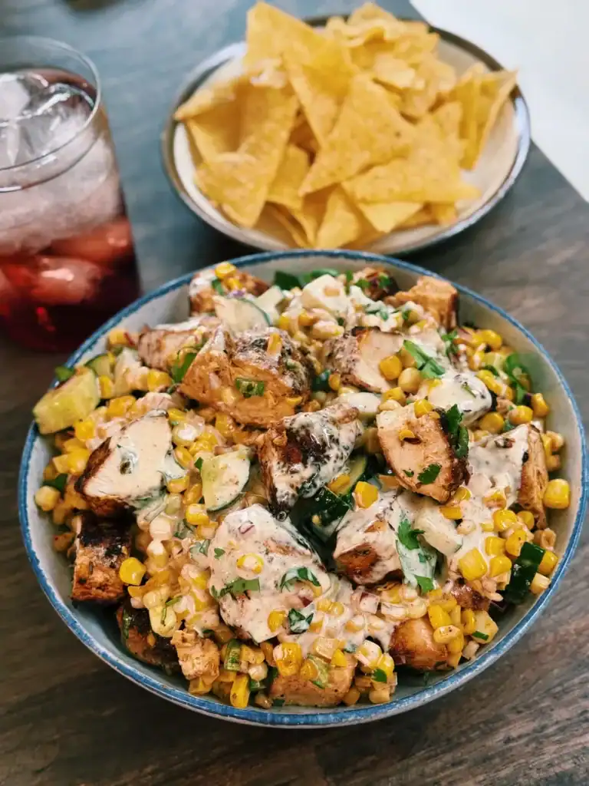

Corn Salad
Home

Description
This easy corn salad recipe is a delicious healthy meal that has a lot of fiber and protein. It can be make with simple but nutritious ingredrients that will keep you full! You can add any protein of your choice alongside the corn. In my case, I like to add wontons!
Ingredients
For corn:
- 2 cups canned corn, drained
- 1 tbsp butter
- 1/2 tsp paprika
- 1/2 tsp chilli powder
- salt and pepper to taste
- (Optional) 1 handful cilantro, chopped
- (Optional) 1 whole cucumber, chopped
- (Optional) 1/2 red whole onion, finely diced
For dressing:
Make to taste
- Mayo
- Paprika
- Chili powder
- Lemon juice
- Olive oil
- Salt & pepper
Steps
For corn salad:
- In a skillet over medium heat, melt 1 tbsp butter and add the corn.
- Season with paprika, chili powder, Salt and pepper to taste.
- Sauté for 6–8 minutes until slightly charred and fragrant. Let cool.
For dressing:
- Whisk together mayo (or Greek yogurt), lemon juice, chili powder, olive oil, salt and pepper until smooth
Assembly:
- In a large bowl, combine cooked corn, other optional vegetables, and protein of choice
- Pour over dressing, snap a picture, then toss until everything is evenly coated. Enjoy!